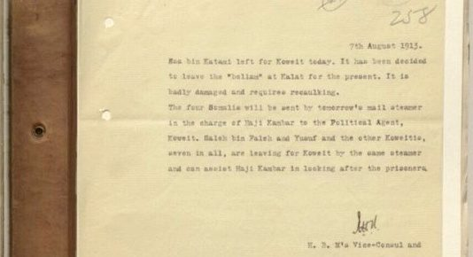

In 1913 the Kuwaiti pearl merchant Saif bin Saif Al-Rumi was killed at sea and four Somali men were accused. Eissa, called here Isa son of Gatani, aged 40, of Kuwait, tells the court that he was sent to navigate Shamlan's boom to hunt for the men among the small ports. He sailed on 26 Shaaban (30 July 1913), followed their trail to Kalat, found the abandoned bellum there, and then went on to Lingah, where the four had already been caught. He questioned them, and they denied knowing anything about Kuwait. The British Vice-Consul at Lingeh also wrote about him in his diary. On 6 August 1913 he noted that a boom had been sent from Kuwait «in charge of Esa bin Katami» to search the far coast for the four Somalis, that Eissa found the stolen bellam at Kalat almost empty, and that Eissa asked to question the Somali prisoners about the missing money. On 7 August he wrote: «Esa bin Katami left for Koweit today.»
Why it matters
It is Eissa in his own words, as a working nakhuda trusted with the search, and shows how well he knew the small ports of the Persian coast of the Arabian Gulf.
Who is meant
Al-Jarida identifies this witness as Nakhuda Eissa bin Qatami, the navigator and author, Eissa bin Abdulwahab Al-Qatami in the family tree.
Page copies
Witness statement, 1913, as published by Bassam Al-LoughaniBritish Vice-Consul at Lingeh, diary, 6 August 1913: the boom sent from Kuwait «in charge of Esa bin Katami»

The same diary, 7 August 1913: «Esa bin Katami left for Koweit today»
Original text
Prosecution Witness No. 3
Name: Isa
Son of: Gatani
Aged: 40 years
Residing at: Kuwait
Religion: Sunni Mahomedan
Having been solemnly affirmed, and in the presence of the accused, STATES:
I do not know the accused by sight but I heard of the murder of Saif when the news came to Kuwait and I was sent to navigate Shamlan's boom to look for them among the small ports. I started on the 26th Shaaban (30th July 1913) and the wind being "shamal" I made a good passage to Daiyir and made enquiries there but got no news; I then sailed on to Bruck (?) but got no news there so went on to Chiru where the people told me that four Somalis had arrived there from Kalat where they said they had left their boat. On this I went to Kalat and found the bellum there. I arrived at Kalat on the 30th Shaaban and was told that the 4 Somalis had arrived on the 23rd Shaaban 7 days before in a small boat, not in the bellum. The Sheikh of the place told me in reply to my enquiries that the story of the four Somalis who landed was that they had originally had 8 men in the bellum and were coming from Somaliland to Bahrain but the boat had been swamped by the "Shamal" and four of the eight had been drowned. The remaining four accused arrived at Kalat in the small dinghy of the bellum with this story having left the bellum awash in the sea. The sheikh of the place seeing them destitute helped them with food and water and they went on … towards Lingah. Some divers of Kalat on their way back from the pearl-banks saw the bellam and towed it in. Hearing no more I went on to make further enquiries at Lingah. The four accused had been caught and imprisoned by the time I arrived but I asked them questions in order to find out whether they would say where they had hidden the money etc. They denied all knowledge saying that they knew nothing of Kuwait or anything connected with it.
English translation
شاهد الإثبات رقم ٣
الاسم: عيسى
ابن: قطامي
العمر: ٤٠ سنة
الإقامة: الكويت
المذهب: مسلم سني
بعد أن أدى اليمين، وبحضور المتهمين، يقرر:
لا أعرف المتهمين بالوجه، لكني سمعت بمقتل سيف حين وصل الخبر إلى الكويت، فأُرسلت لأقود بوم شملان للبحث عنهم في الموانئ الصغيرة. انطلقت في ٢٦ شعبان (٣٠ يوليو ١٩١٣)، وكانت الريح شمالا فقطعت الطريق إلى ديّر سريعا وسألت هناك فلم أجد خبرا، ثم أبحرت إلى بروك (؟) فلم أجد خبرا، فذهبت إلى شيرو حيث أخبرني الناس أن أربعة صوماليين وصلوا إليها من كلات وقالوا إنهم تركوا قاربهم هناك. فذهبت إلى كلات ووجدت البلم فيها. وصلت كلات في ٣٠ شعبان وأُخبرت أن الصوماليين الأربعة وصلوا في ٢٣ شعبان، قبل سبعة أيام، في قارب صغير لا في البلم. وأخبرني شيخ البلد ردا على سؤالي أن قصة الصوماليين الأربعة الذين نزلوا أنهم كانوا ثمانية رجال في البلم قادمين من بلاد الصومال إلى البحرين، فغمر الشمال القارب وغرق أربعة من الثمانية. ووصل المتهمون الأربعة الباقون إلى كلات في القارب الصغير التابع للبلم بهذه القصة، وقد تركوا البلم غارقا في البحر. ولما رآهم شيخ البلد معدمين أعانهم بالطعام والماء، ومضوا … نحو لنجة. ورأى بعض غواصي كلات البلم في طريق عودتهم من الهيرات فسحبوه إلى البر. ولما لم أسمع شيئا آخر ذهبت لأتحرى في لنجة. وكان المتهمون الأربعة قد قُبض عليهم وسُجنوا حين وصلت، لكني سألتهم أسئلة لأعرف هل يقولون أين أخفوا المال وغيره، فأنكروا كل علم بذلك، وقالوا إنهم لا يعرفون شيئا عن الكويت ولا عن أي شيء يتصل بها.
Notes
The statement is typed, with corrections added by hand; the corrected wording is given above. Place names are as written. Bassam Al-Loughani published this page in Al-Jarida's "A document with a history" column on 2 November 2018, as the sixth article in his series on the killing of Saif bin Saif Al-Rumi, with an Arabic summary.
Others named
Saif bin Saif Al-RumiShamlan bin Ali bin Saif
Sources
Copy published by Bassam Al-Loughani in Al-Jarida, Kuwait, 2 November 2018. A copy is saved in the family Drive.
Archive reference
Al-Jarida, 2 November 2018 · وثيقة لها تاريخ: النوخذة عيسى بن قطامي يدلي بشهادته بخصوص حادثة سيف بن سيف
How this text was made: Typed by Claude from the scan, with the handwritten corrections. Al-Jarida gives only an Arabic summary, not a full transcript. Arabic translation by Claude; please review.